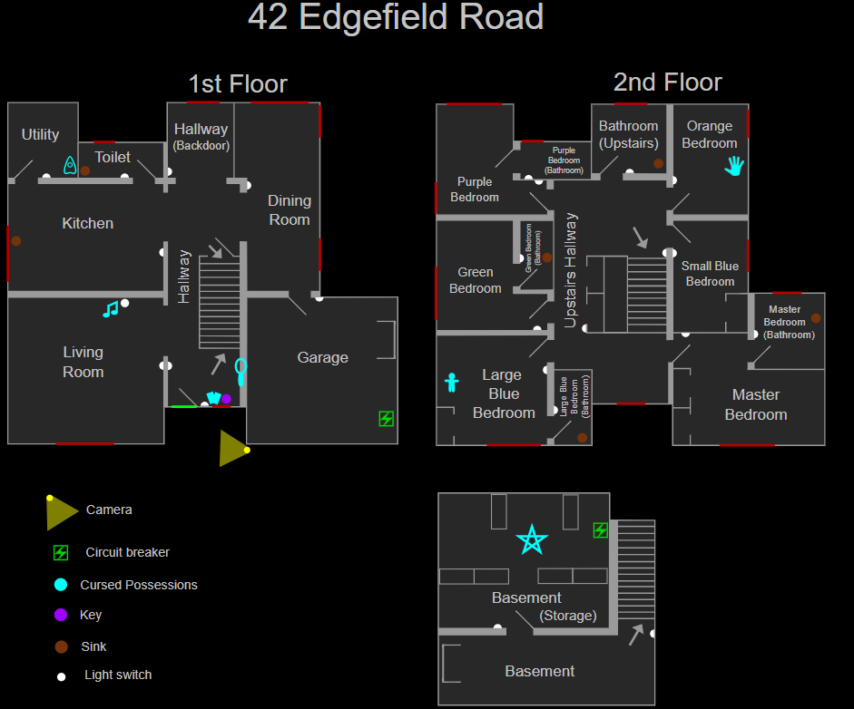

42 Edgefield Road
42 Edgefield Road (или просто Edgefield) — это небольшая карта в Phasmophobia.
Это двухэтажный дом с шестью спальнями и подвалом, окружённый теснотой и клаустрофобной атмосферой.
Несмотря на узкие коридоры, во время охоты есть много укрытий, ведь место, где можно спрятаться, всегда находится в нескольких шагах.
Тесные коридоры часто затрудняют наблюдение за происходящем в доме,
поэтому можно установить несколько видеокамер и наблюдать за ключевыми событиями из фургона.
Структура
На этой карте есть шесть спален (включая детскую), шесть туалетов, столовая, гараж и подвал, а также другие помещения.
На этой карте есть один плюшевый мишка в Фиолетовой спальне на втором этаже.
Подвальный коридор и кладовая комната, находящаяся там же за дверью, считаются одной комнатой.
Если в комнате на втором этаже есть смежная ванная комната, то эти два помещения считаются одной комнатой

Укрытия и стратегии
В доме есть шесть шкафов на втором этаже и два небольших железных шкафчика в гараже и подвале.
По итогу, в доме всего восемь укрытий, не считая укромных мест за мебелью по всему дому, которые, в зависимости от сложности,
могут быть частично или полностью недоступны:
- Любитель: —
- Средняя: ≤ 6
- Профессионал: ≤ 7
- Кошмар/Безумие: ≤ 8
- Игра втроём: +1 открытое укрытие
- Игра вчетвером: +2 открытых укрытия
Зацикливать призрака можно вокруг дивана в гостиной.